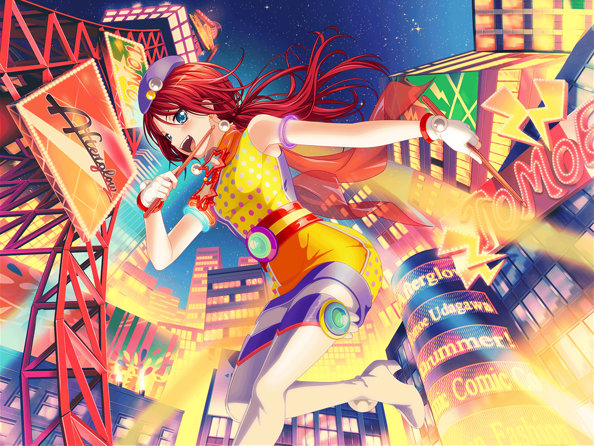

ショッピングモール
巴
お、{{userName}}さんも買い物か？
巴
アタシはこれから本屋に行くとこ。
ちょっと探し物があってさ
巴
なんだ、{{userName}}さんも！
偶然だな！ 一緒に行くか！
巴
……って感じでさー、アタシ達で
マンガのストーリーを考えることになったんだよ
巴
でも、その応募したいって言ってた新人賞、
なんと締め切りが過ぎてたんだよ
巴
だから結局、話を考えてたって意味なかったんだけど……
それでも、めちゃくちゃ楽しかったよ
巴
最後にみんなで考えた話は、なんかこう……
わけわかんない話になっちゃったんだけどさ……
巴
マンガ作るって話になって、当然
みんなで、好きなマンガの話とかしたんだけど……
意外とお互いの趣味知らなくて、結構びっくりしたよ
巴
小さい頃からずっと一緒の幼馴染だけど、
案外、知らないこともあるもんだなー
巴
近すぎるから、逆に見えないってのはあるのかもな〜
巴
でもそれって、別に悪いことじゃない……よな？
巴
……だよな！
知らないことがあろうが、大事な親友には変わりないもんな！
ショッピングモール 本屋
巴
そういえば{{userName}}さんは何買うんだ？
巴
音楽雑誌？
へー、CiRCLEの楽屋に置いてある雑誌って、
{{userName}}さんが用意してたんだな
巴
おーっ！ 和太鼓を特集した雑誌も置いてくれるのか？
そりゃいいな、楽しみにしとくよ！
巴
ああ、アタシ？
アタシは、あこに頼まれたものを探しにな
巴
家の近所の本屋になくてさ。
ここなら置いてあるかなってな
巴
なんか、ゲームの本らしいんだけど、
いまいちよくわかんなくてな。
ネオファンタジー……なんとかっていうゲームなんだけど
巴
NFOって覚えとけば大丈夫って言われたけど、
{{userName}}さん知ってるか？
巴
おお、知ってるのか！
いやー、それなら悪いんだけどさ、
一緒に本探してくんないかな？
巴
いやいや、少ししか知らないとか、謙遜しなくていいって！
少なくとも、アタシよりはわかるだろ？
巴
いやー、助かった！
これであこも喜んでくれるよ！
巴
えーと、ガイドブックだったか設定資料集だったか、
よくわかんないけど……なんかそんな感じの本だって言ってたな
巴
頼りにしてるよ、{{userName}}さん！
よろしく頼むな！